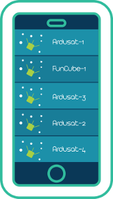
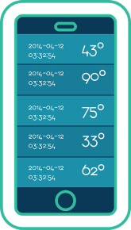
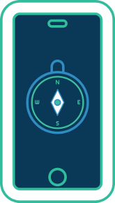

A Community about satellites and how to listen to them. AimSAT-MX is a framework that will help you to know more about satellites and will help you to easily aim a directional antenna in the correct position. AimSAT-MX also has an easy-to-use API to retrieve satellite information such as description and orbit passes.
How can you listen to satellites with the help of AimSat-MX?
What do you need to listen to satellites?
Need some help? Checkout the community!
Choose a satellite to see when can you listen it
CubeSat satellites are pretty easy to listen to them for amateur listeners.
Choose the satellite pass
Best passes are those at 90 degrees of elevation
You can see the directions of where the satellite will show
This is when you should point your antenna and wait for your radio to catch the satellite signal
Follow the directions you will hear from the app to aim your antenna in the right position
It will be easier to aim the antenna if you attach your smarthphone directly to the antenna
There are many different ways to listen to Low Earth Orbit. Here we will show you the most common and low-budget solutions we know.
You should know the time the satellites will pass over your location and learn what is their broadcast frequency as well as the software you need to understand what they are saying.
AimSat MX mobile apps will show you a wide selection of satellites you can listen. You can also find the time the satellite will pass over your location.
You can also use a PC app such as Gpredict to find in a map the possition of the satellites
There are two types of antennas: Directional and Omnidirectional.
Our suggestion goes with a directional Yagi-Uda type antenna because they are easy to build and use. Also, with AimSat MX mobile apps, it will be easier for you to aim and orient it to your chosen satellite.
Yagi antennas can be bought or do it yourself. Always remember that your antenna must be for the same frequency as the satellite transmission frequency.
For the radio receiver, a software defined radio is your best option. You can buy a satellite-listening specialized one, such as the el FUNcube Dongle or a cheaper one, such as the one used to watch digital TV based on theRTL2832U chipset.
You will need a software defined radio. We suggest SDR# or Gqrx. If you use a RTL2832U radio, you will need an application to configure it.
SDR software can save an audio file for latter analysis with some other software. Remember that satellites have tons of things to say but they talk in their own language. For example, if a satellite loves to talk with APT pictures, we suggest you use WXtoImg
Some satellites like FUNCubes have their own telemetry software with reception and data decoding.
You can always write on your Google Group to seek and find help and share your experiences. You are welcome to join this helpful community of satellite listener enthusiasts.
Most satellites are located near the Earth in a Low Earth Orbit where they travel at almost 27.5 km/h (8km/s!) going around the Earth every 90 minutes. A Low Earth Orbit is the most budget-friendly and simple way of possitioning a satellite
They are a miniature satellite in the shape of a 10cm x 10cm cube. They are less than 1.33 kilograms and most of the time they are made with everyday electronic components. A CubeSat in a LEO can stay orbiting the Earth for almost 180 days. Sadly, they end their mission when they lost altitude and they burn in the atmosphere.
These little guys are capable of many specific tasks, earth watching missions, communications and scientific experiments. They are very cheap to made for specific missions that do not justify the research and development of a regular full-size satellite
Corina Olicon
@c0rysi
Carlos Castellanos
@rockarloz
Galileo Teco
@genitalico
Juan Carlos Sanchez
@juancar1os
Manuel Rabade
@manuelrabade